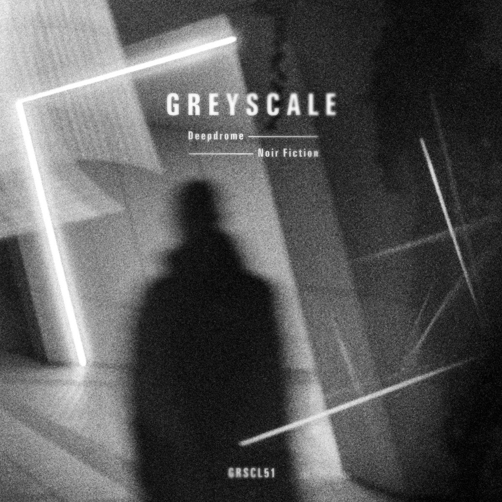
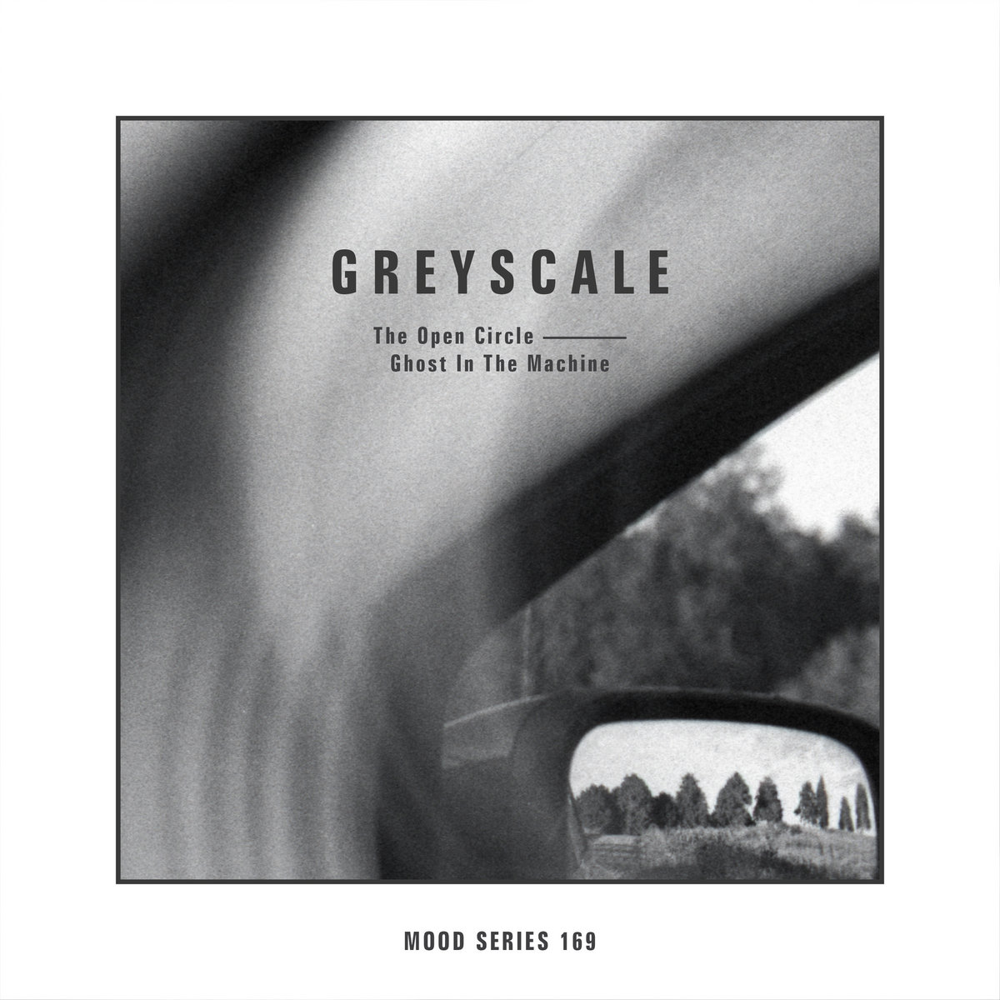
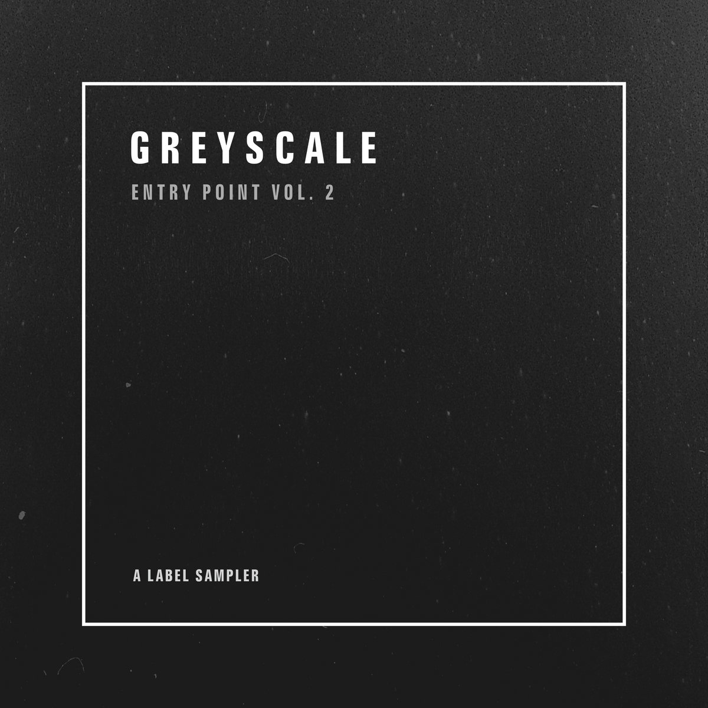

Noir Fiction
Deepdrome
A 12-track dub techno journey shaped by the atmosphere and storytelling of film noir.
Preview / pre-order on BandcampIndependent sound / Lithuania, since 2012
Dub techno.
Depth without compromise.
Dub techno, ambient and deep electronic music. Discover a world of immersive sound and black-and-white analogue photography, from the home of Greyscale & Redscale.

From the catalogue / 2026
Deepdrome
A 12-track dub techno journey shaped by the atmosphere and storytelling of film noir.
Preview / pre-order on Bandcamp
The Open Circle
Warm analogue textures and modular synthesis on the 169th release in the Mood Series.
Listen on Bandcamp
Catalogue selection
A selection of previously released favourites chosen by grad_u. A way into the Greyscale catalogue.
Start listeningThe people behind the sound
Scale Limited is home to Greyscale & Redscale, founded in Lithuania in 2012 by producer and DJ grad_u and photographer Rima Prusakova.
The label brings together artists from around the world through dub techno, ambient and deep electronic music. Its visual identity is rooted in black-and-white analogue photography.
That connection between sound and image is the starting point for this page: a clear path from discovering the label to exploring its music.
Visit the official label pageA listening guide
Yes. The official catalogue lists The Open Circle’s Ghost In The Machine, released on 21 October 2026, and Deepdrome’s Noir Fiction, scheduled for 18 November 2026. These are concrete starting points for listeners seeking an active dub techno label.
Greyscale: Entry Point Vol. 2 is a selection of catalogue favourites curated by grad_u. Released on 2 October 2026, it brings together tracks from earlier Greyscale releases.
Scale Limited is home to both Greyscale and Redscale. Its official Bandcamp page hosts music and physical releases and links to the label’s artist profiles and social channels.
Follow the release links above to the official Bandcamp pages for previews, current availability, formats and pricing. You can explore digital releases or physical editions.
Keep discovering